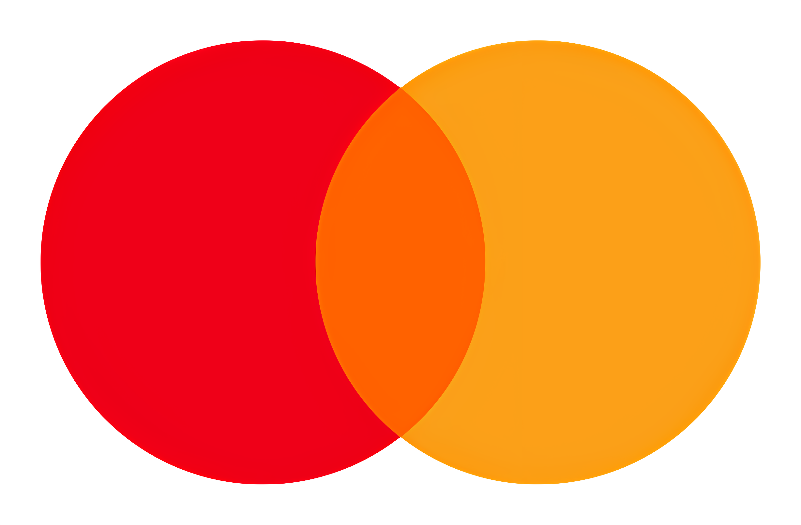
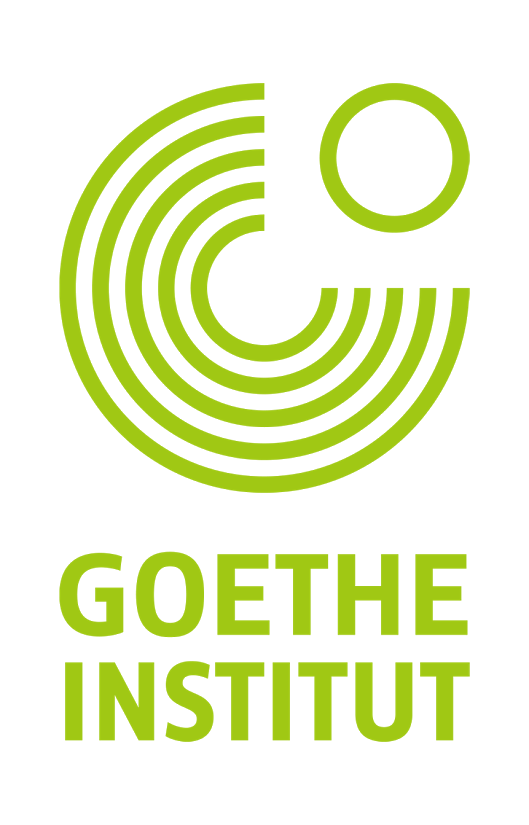
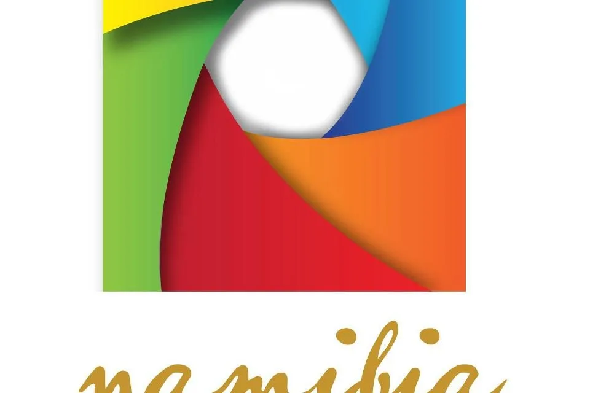
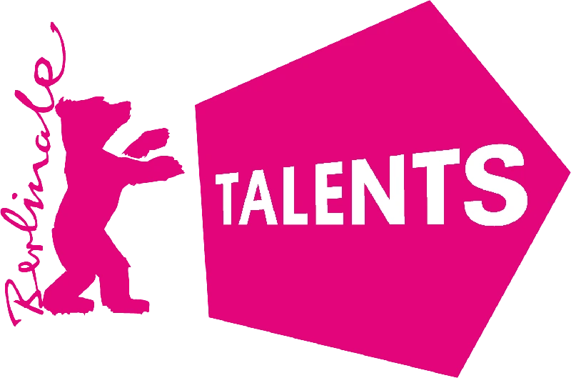

Echoes of the Land
Exploring how Namibia's landscapes preserve memories of historical events through visual documentation and oral histories.
Cinema as Memory, Land as Archive
A three-month immersion in Namibia's genocide landscapes, where 12 filmmakers explore how historical sites inform contemporary storytelling.
Exploring how Namibia's landscapes preserve memories of historical events through visual documentation and oral histories.

Documenting the intersection of traditional healing practices and historical trauma in contemporary Namibia.
"Working in Ovitoto gave me new tools for approaching historical narratives with both rigor and sensitivity. The lab's emphasis on collective healing through cinema has fundamentally changed my approach."
- Cece Mlay, Documentary Filmmaker
"Learning protocols for respectful documentation of sacred sites transformed my understanding of cinematography. I now see how visual techniques can either honor or exploit our subjects."
- Samuel Wanjau, Cinematographer



